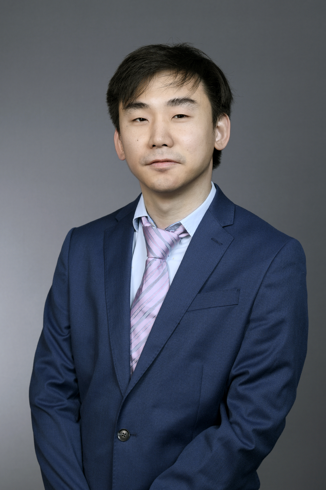

Welcome!
I am a Postdoctoral Fellow in Economics at the Global Poverty Research Lab, Northwestern University, and I am currently visiting the Harvard Center for International Development. I received my Ph.D. in Economics from Northwestern University in 2024, under the supervision of Christopher Udry (Chair), Dean Karlan, and Lori Beaman.
Much of my work centers on school-based agricultural extension (SBAE)—a movement that transforms rural schools in developing countries into cost-effective hubs for diffusing agricultural technologies and raising school attendance, by combining inquiry-based science instruction, school farms as demonstration plots, and student home-farming projects. Since 2019 I have secured over $4.2 million across 12 grants to pilot and evaluate SBAE in Liberia. Given its demonstrated success, the program is now positioned to scale across rural Liberia, Côte d'Ivoire, and Kenya through 2035.
My research spans three areas. In development economics, I use large-scale randomized evaluations to study synergies between agriculture, rural education, and digital technologies, building on the momentum of the rapidly scaling SBAE movement. In behavioral economics, I develop a framework, grounded in cognitive neuroscience, of how people jointly choose which mental models to activate—possibly several at once—and how much to invest in acquiring information, with applications in program evaluation, agriculture, and education. In family and organizational economics, I study cohesion in rural household and community decision-making.